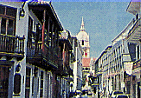
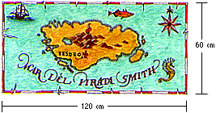
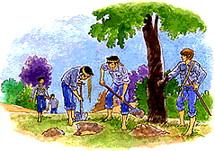

Type of activity: Game
Duration: 3 hours
Place: Troop meeting place or at camp
Participants: The Troop

1 Moreno (20 km)
The Capital
(85 km)
2 Delfos Park (Beauty Spot)
3 Dunton farm (Mr Campos)
4 to Moreno and the Capital
5 Service Area
6 to Esmeralda and the Coast
7 Mrs. Duran
8 Joe's Café (Mr Gomez)
9 New road to Service Area
10 Mister and Mrs. Barra
11 Municipal Property |
12 The "Long Road" Garage
(Mr Herrera)
13 Mr. Solis' Mansion
14 Mrs. Vera
15 Mr Soto
16 Doctor Maria Torres
17 Mrs. Llanza
18 School (Mrs. Montes)
19 Car park
20 The "Atajo" Bar (Mr Alvarez)
21 Councillor Fuentes
22 Mr. Tomas (store) |
23 Traffic lights
24 Disused Building
25 Church
26 Father Suarez
27 Police Station
28 Fernando Concha (Paper bag factory)
29 Old railway lines
30 Train station
31 B2173
32 to Esmeralda (35 km and to the coast)
33 Valle Verde |
How do we confront the kind of situation where many people
have to take a decision? Without doubt it is difficult as each one defends
their particular interests. Nowadays, there are frequent cases where the
progress of some means a step backwards for others, and damage to their
quality of life.
With this activity, we want you and your Troop to become familiar
with these types of problem in an entertaining manner. It is a game whose
objective is for the participants to adopt a role within a fictitious situation,
forcing them to discuss themes that affect the life of the whole community
and to make decisions accordingly.
In the first place, they have to imagine the following: The
authorities of a country have decided to build a highway that has to pass
through a beautiful small town. How do you think its inhabitants feel? They
would probably have a different appreciation of it if they were to think
of the hundreds of people who need the highway.
Before the activity
To prepare this game, the adults in charge should follow these
steps:
| 1. |
According to the number of participants, they have to make the character
cards "role player" and "hinderer" which appear in Appendix 1. Remember that these cards should have a drawing
of the person, and on the other side the necessary information that characterises
him or her.
The number of players can be between 23 and 48 persons. Before initiating
the activity, we suggest that you make the following distribution: 70% get
the "role player" cards, 15% "hinderer" cards, and the
remaining 15% do not receive cards as they will belong to the "uncommitted"
group. |
| 2. |
Those in charge have to prepare a big copy of the map of Valle Verde and
the highway project as shown in Figure 1. This street
map should be in view of all Scouts during the game. |
| 3. |
They should also prepare a copy of the newspaper "THE STAR" (Appendix 2) for each participant. |
| 4. |
One week before the activity, the adults in charge should ask the players
for complementary information. This involves researching the following:
The cost of each Km of a highway
The effects of noise pollution on plants, animals and people.
The means to oppose public works. Do they exist or not? |
| 5. |
In addition, the activity leader asks the youngsters to bring clothes and
accessories to dress up on the day of the game. |
Presentation
The entire Troop meets to discuss the game. For the activity
to be successful, the activity leader explains to the scouts that they should
put a lot of effort into it and try to imagine themselves in the role they
will be playing.
Then the leader goes on to talk about the dilemma caused by
the results of economic and industrial progress - that they are not always
compatible with peace and protection of the environment. For example, the
car allows us to move quickly and comfortably from one place to another,
but its engine contaminates the air with toxic gases.
Often one has to sacrifice the well-being of the minority
in order to satisfy the wishes of the majority. This occurs in the building
of a hydro-electric plant; if a lot of people are going to enjoy the benefits
of it, lot of woods and villages will be condemned to be left under water.
The Game
Suggested duration: 10 minutes.
| 1. |
The activity leader asks every participant to imagine living in Valle Verde,
a beautiful little village where the new highway, M19, is planned to pass
through. A lot of the inhabitants oppose the project, but there are also
those who see this as their opportunity to improve the current situation.
Between them all they have to decide on the future of Valle Verde. |
| 2. |
To start the game, those in charge display the map and hand out a copy of
the paper "The Star" to each player. Here the dilemma facing the
village is described. Opinions on the matter are varied and a meeting has
been arranged in order to air the different points of view and analyse all
the consequences. |
Suggested duration: 30 minutes.
| 3. |
The adults in charge distribute the cards of the "role-players",
in such a way that as many as possible obtain a role. The "hinderer"
cards should be given to the participants who do not have a role. If necessary,
those in charge can invent and add further cards.
The youngsters
who do not get any cards, form part of the "uncommitted"group.
At the public meeting, the factions in the conflict will try to win their
support. It is hoped that these new players will contribute new data thanks
to the previous research during the week. |
| 4. |
The activity leader tells all the participants to take time to prepare for
the public meeting. This is the time to study the roles, creating the arguments
to be used in the subsequent discussion. Those in charge suggest that the
Scouts observe the map and find out where the residential, industrial and
commercial sectors are in Valle Verde. Their locations are of key importance
and can be used as strong arguments against or in favour of the highway.
In this space of time, the players should also look for the
best way of characterising their role, making use of all possible accessories
brought from home. |
Suggested duration: 10 minutes.
| 5. |
The activity leader can give the participants incentives to explore possible
reactions within the groups when they share opinions. There should be some
time for the factions to organise themselves as in favour or against the
highway project, as well as those who are "uncommitted". |
Suggested duration: 45 minutes to one hour.
| 6. |
The meeting will be led by Councillor Fuentes, who wants the desires of
the inhabitants of Valle Verde to be the most important factor in making
the decision. Therefore, he needs to know what position they will adopt
before the Provincial Council (the regional authority) and the Minister
(the national authority). The activity leader can take the role of Councillor
Fuentes if the situation demands it. The important thing is that each player
manages to express his or her idea. |
| 7. |
Councillor Fuentes initiates the public meeting. One by one the inhabitants
start to explain their arguments. The debate will probably be rather heated
at times and it is the obligation of the president to control the discussion.
After all have spoken their minds, Councillor Fuentes will suggest a vote
that will decide the future of the highway project. Only the people who
live in Valle Verde have the right to vote! After the result is declared,
the president will close the meeting. |
 8. To finalise the game the activity leader asks each
patrol to write an article about the public meeting for "THE STAR".
They can also ask for a recorded report on tape for the local radio of Valle
Verde. 8. To finalise the game the activity leader asks each
patrol to write an article about the public meeting for "THE STAR".
They can also ask for a recorded report on tape for the local radio of Valle
Verde.
9. The articles are read at the following Troop meeting. After
the exhibitions, the adults in charge invite the Scouts to comment on the
activity. The objective is for every participant to have the opportunity
to express what they felt whilst interpreting their role.
We hope the game has been useful in teaching you how to confront
similar problems such as the one presented in "The highway of Valle
Verde". Remember that the solution will always be fairer if all make
an effort to step in the other people's shoes.
This material is an adaptation of "The
Spring Green Highway" designed by Stephen Joseph and Niel Lester, and
published by the Division of Scientific, Technical and Vocational Education
of UNESCO.
Appendix 1
CARDS: ROLE-PLAYER AND HINDERER
The following are examples of cards that can be used to define
roles in this simulation game. They are not rigid and it is possible to
create other personalities with particular interests, in favour or against
the highway project. Even though the majority of the content is applied
to a certain type of community (Western European), it can easily be adapted
to any neighbourhood. If the Troop wishes to adapt the game, the adults
in charge should include typical personalities of the village, the region
or the country where they live.
1. "Hinderer" cards
HINDERER CARDS
"There will probably be a horrible noise
from the highway, particularly when it passes in front of the farm of Mr.
Campos". |
|
HINDERER CARDS
"I have heard that cows give less milk
when there is noise. Will that not affect Mr. Campos' cows?" |
|
HINDERER CARDS
"Why don't they extend the train service
instead? Isn't there a train from the Capital City to Esmeralda perhaps?" |
|
HINDERER CARDS
"I am sure it is not true that there
will be less traffic on the A74. Won't there be a lot of people from the
region wanting to get out of Valle Verde along the highway?" |
|
2. Role-player cards
 |
You are the local doctor in Valle Verde and even though you
have lived here for five years some of the people still do not trust you
because you are Valle Verde's first female doctor. You are particularly
concerned about the sanitary issues of the new highway, in particular that
of mental effects that lead, contained in petrol, might have on the youngest
children. You think that the additional traffic on the highway will increase
this problem. |
|
 |
Your house is exactly where the highway will cross. You have
lived here all your life. Before you became a widow, you and your husband
bought a farm from Mr Solis' father, when he was still alive. You have decided
that you want to stay in your house and you will do everything in your power
to stop the highway, even if the Ministry offers you a good compensation. |
|
 |
You are high up in the Environmental Ministry as an official.
The Minister has asked you to write a report about the result of the meeting.
You came to Valle Verde by train, and you have never driven a car. Even
though you have access to a personal driver, you prefer to travel by train.
As a civil servant, you should be impartial, but personally you support
environmental protection. |
|
 |
You are the manager of the restaurants "Donde Lorca"
and you have been informed that you will be given the contract for the Service
Area of Valle Verde at the M19. Your mission is simple: convince your neighbours
that the project will open up the opportunity for many new jobs. You are
also looking for a person able to manage the restaurant and the Cafeteria-bar. |
|
 |
You are the co-ordinator of the environmental pressure group
"Friends of the Earth". You are a strong opponent to the highway,
as you already have explained in THE STAR. You hope to convince the people
of Valle Verde to join the campaign against the project. You are young and
idealistic and you believe that the M19 represents environmental destruction
that has to be fought against at all levels. You have fought against local
plans previously, but this is the first national project. |
|
 |
You are furious. The highway will not only pass a couple of
metres from your farm's front yard, but it will also cut it in two. The
Ministry has told you that you will easily be able to use the B2173, which
crosses the highway, in order to reach the other part of your farm. On the
other hand, the M19 will seriously affect your ability to bring the cattle
to and from the dairy. You are also angry because Mr Solis, to whom you
rent the land, seems to be indifferent. |
|
 |
You are the director of "Ugarte Constructions Ltd",
an expert highway constructor and member of the National Federation of Highways.
You hope to win the contract on M19. You are a businessman, anxious to obtain
profits, therefore, you are hard when it comes to negotiating. |
|
 |
You are the owner of the "Long Road" garage. You
are worried about the economic losses that you will suffer if the new Service
Area at the M19 is constructed. You will only stop opposing the project
if you manage to get a good agreement on repairing breakdowns on the highway.
This would mean that even though your fuel revenues would fall, your breakdown
service could still prosper. |
|
 |
You are the representative from Valle Verde in the Provincial
Council. You took the initiative of calling the meeting because you want
to know what the people of the village really feel about this issue. You
should be aware that there will be strong feelings involved in the highway
and that you have to be firm, but fair. |
|
 |
You are the director of "Real Container Services Ltd"
which transports goods to and from Esmeralda. You are renovating your fleet
of heavy trucks and the new highway would be a real reviver to business.
You firmly believe in the saying "where there's rubbish, there's money". |
|
Appendix 2

YEAR No 3, NUMBER 4, NOVEMBER, No 443, VALLE VERDE
···· APPENDIX 2
Highway plans shock Valle Verde
Valle Verde, a lovely picturesque village in the main highway
that unites Esmeralda with the Capital City, is strongly considering the
announced plans to construct a new highway M19. Some locals have declared
war on this business, whilst others insist that the highway will bring security
and tranquillity into the Valley.
This week I went to the village to hear the different opinions,
talking to the locals, and I |
By Juan Rodríguez
have to admit, to my great relief, that Councillor Fuentes,
representative of Valle Verde before the Provincial Council, already had
thought of doing the same. He is planning a public meeting, which will take
place at the Municipality. Councillor Fuentes informed me that he wants
to listen to all sides. He has already written to both the Ministry of Transport
as well as the Environmental Ministry, asking them to send a representative
to come to the meeting. He hopes to get a positive answer from both. |
NOISE
The first thing I noticed about the village was
the great noise problem they have due to the heavy trucks in the centre
of the community. Father Suárez, the local priest, said that the
noise and the vibration were causing considerable damage to the church right
by the principal highway. Nevertheless, a local resident who also lives
near the A74, Mrs. "Hard hand" Duran, as her loved ones call her,
says: "I have lived here all my life and the traffic noise has never
bothered me".
I DO NOT WANT TO MOVE
Mrs. Duran continues saying: "They have told
me that my house will be demolished if they build the new highway, but they
will do that over my dead body. I will stay here until they force me away".
DANGEROUS CROSSING
Certainly hard words, but there seems to be a whole
current of opinion in the village which is in favour of the highway. |
Mrs. Pérez, who lives in Municipal property, spoke
to me about her fears about her children who have to cross the A74 twice
daily, to and from school. She said: "In that highway 5 kids were run
over last year and the whole world knows about the awful death of young
Jose López some years ago". Mrs. Montes, director of the primary
school of the village, shares these fears, although she agrees almost against
her will that people will be able to go the Capital City much cheaper with
the new highway.
COMMUTERS
Some people of Valle Verde travel every day to
the small town of Moreno and one of them, Mr Pedro Rosas, energetically
expressed his views on the travellers' situation in Valle Verde. "The
highway is in a really bad state and the trains are expensive", he
protested.
OPINION
The divided public opinion over the issue of the
highway is reflected in the many local |
organisations that now are uniting forces for combat. The
ecological group "Friends of the Earth" swore to combat the highway
with their lives, and the organisation Society Valle Verde has given them
their support in the struggle. They wish to protect the beautiful rural
surroundings that they consider will be ruined by the new highway. But the
users of the highway and other industrial interests are also getting organised
in support of the new highway. The Group for Road Development believes that
the highway is essential to relieve Valle Verde from traffic and to promote
and develop commercial ties with the city of Esmeralda. The highway constructors,
who plan to send their representatives to the meeting of Councillor Fuentes,
support them.
All these interest groups, with their data and numbers
will most probably increase the discard on this issue. Moreover, none of
those I interviewed last week wanted to walk in Councillor Fuentes' shoes,
who will have to maintain order at the public meeting. |
THE STAR asked the
representatives of two pressure groups to expose their points of views.
Paula Prado, Co-ordinator of "Friends
of the Earth":
"The M19 is a symbol of everything that is wrong with national policy
on transport. It will cost millions of dollars, it will take up thousands
of km2 of fertile agricultural land and it will kill the rail system which
until now has worked perfectly well, and which according to us can be used
even better. With oil running out, we must get away from cars and cultivate
our food a little better. This highway takes us in a wrong direction and
will mean less money being invested in public transport, which half of the
population without cars depends upon. The highway protectors believe that
they will save Valle Verde, but experience proves that traffic expands until
there is no more space. We want real solutions for the traffic problems,
planning in a way that people will not need to travel that much."
Andres Arias, President of the Group for Road Development of the
Province: |
"Until now, all traffic from the
Capital and Esmeralda, including a heavy truck fleet, passes through Valle
Verde threatening the lives of all its inhabitants, destroying the historic
buildings with the vibration and causing noise and contamination. The M19
will eliminate these problems and will at the same time help the general
economy, accelerating truck trips and in particular allowing agile international
commerce with Esmeralda whose congestion on the A74 has simply stopped its
development. If M19 is not constructed, this opportunity will be lost, the
life of Valle Verde will decrease and its people will be strangled by their
own principal highway". |

Type of Activity: Game
Duration: 1 hour and 30 minutes
Place: Troop meeting place or at camp
Participants: The Troop
There are many problems that we can only solve with the help
of others, but this is not always easy to do as we all have different personalities
which react in different ways depending on the situation. In the 19th World
Scout Jamboree, thousands of youngsters from all over the world will meet
to have fun and at the same time resolve problems together. When faced with
awkward challenges, finding forms of communicating to overcome cultural
and historical differences is of the greatest importance.
The activity we hereby present to you takes place in the warm
waters of the Caribbean, where the Troop will transform itself into a CREW
OF PIRATES who are looking for the greatest treasure ever to be seen
by man.
With this game we hope that the Patrols will, in an entertaining
manner, come to understand the value of co-operation.
Before the activity
The following materials are required for preparation:
A piece of thick card or cardboard 120 cm long and
60 cm wide
Drawing and colouring materials such as felt-tip pens,
crayons, paints, etc
4 big envelopes
32 smaller envelopes
Copies of Appendices 1 and 2 for all observers and Patrols participating
One flipchart and marker pens
One notebook for each observer
The Game
1. To begin, the adults in charge have to decide what the
treasure should be. Since it is a game of co-operation, we suggest that
the treasure be of symbolic value, and something which reinforces the Troop's
identity and sense of belonging. They must then find a suitable hiding place.
2. The leaders design a treasure map setting real geographical
elements in a fantasy situation, for example an island surrounded by coral
reefs, sharks and sunken boats. Whatever the case, the important thing is
that the location of the treasure be accurately indicated. This treasure
map is to be drawn on the 120 by 60 cm piece of card.
3. When the map is ready, it must be turned over and two straight
lines drawn in the form of a cross on the blank side, thus dividing it into
four equal rectangles each 60 cm by 30 cm, as shown in Figure
1. The basic outline of the map must be copied onto each of these
four rectangles.
4. Each of these basic outlines must then be divided into
eight equal squares 15 by 15 cm, and each of those divided into three pieces.
The corresponding letter (a, b, c, d, e, f, g, h, i, j, or k) must be written
in pencil on each of these pieces. Now with the basic model exactly reproduced
on the four rectangular pieces, the treasure map should have 96 pieces,
as observed in Figure 1.

5. The next step is to repeat the following procedure for
each of the rectangles:
The 24 pieces are cut out, ensuring that all parts
of the same size are marked with the same letter.
Eight small envelopes are marked with the letters A,
B, C, D, E, F, G and H, and the three pieces placed inside each one according
to the instructions in the box below. NOTE: Before a piece is placed in
its envelope, whatever is written on it must be erased and in the same place
the letter of the envelope it belongs to must be written.
Envelope A contains pieces i,
h, a.
Envelope B contains pieces a, a, c.
Envelope C contains pieces a, j, a.
Envelope D contains
pieces d, d, g. |
Envelope E contains pieces g,
b, c.
Envelope F contains pieces c, i, g.
Envelope G contains pieces f, c, k.
Envelope H contains
pieces e, f, d. |
|
Now the eight small envelopes are placed inside one of the big envelopes.
Once each of the four rectangles has been correctly cut up
and packaged, the adults in charge should have in their hands four big envelopes
which each contain eight envelopes (A, B, C, D, E, F, G and H).
Presentation of the game
The activity leader explains to the Patrols that they have
come to the warm waters of the Caribbean where, according to an ancient
legend, one of the greatest treasures known to man is still hidden. The
Troop has magically transformed itself into the crew of a pirate ship which
is looking for the treasure. An old sailor, in return for a number of barrels
of rum, has given them a map which indicates where the valuable treasure
lies. But there is a problem: with the passing of time, the map has broken
into many little pieces and can't be deciphered unless the pieces are put
together again.
To succeed in doing this, the crew will have to approach the
task as a team, combining the concentration and ingenuity of all the pirates.
Without entering into details of the rules the leader explains
that the game is not a test of physical strength or skill of the individual,
but aims to develop each person's capacity for co-operation.
First part of the game
The game is designed for four Patrols. Each group sits
in a circle out of view of the others, and must appoint an observer.
The Troop does nothing while the observers go to the
adults in charge, each to be given two copies of Appendix
1 and one big envelope containing the eight
smaller envelopes marked A, B, C, D, E, F, G and H.
The observers should be given enough time to read the instructions
and to completely familiarise themselves with them. Time should also be
allowed to answer questions and resolve any doubts that might exist.
The observer has two functions: to keep watch over the game
so that the rules are correctly followed and to monitor the behaviour of
the participants.
The observers reintegrate themselves into their respective
Patrols. The activity leader asks them to hand out the instructions to the
Patrols and one of the members reads them out. All questions should be dealt
with at this stage. When all are clear about the rules, each observer pulls
out the small envelopes from the big one, and hands out one to each of the
Patrol members.
NOTE: This game is made for Patrols of 9 members, but it can
easily be adapted if this is not the case. If there are not enough envelopes
for everyone, they will have to be shared by pairs or small groups, as decided
by the Patrol. If the other way around, and there are too many envelopes,
the Patrol can distribute extra pieces to each member.
After a signal, each person opens his or her envelope
and lays out the three pieces face down, without the drawing of the map
showing.
The observer must make sure that all members of the Patrol
can see the 24 pieces and that none of them are face up, but he should not
intervene in the game.
Suggested duration: 30 minutes.
As Appendix 1 suggests, each
Patrol should form eight perfect squares of equal dimensions (15 by 15 cm).
As soon as one of the Patrols has finished, they should stand up and wait
for the rest of the Troop to finish.
When all the Patrols have finished their jigsaw, the
leader signals that they can turn over all the pieces and study the drawing.
Again all Patrols should have finished before the game continues. Then,
the leader checks that each group has completed only a section of the treasure
map, therefore making it obvious that to eventually complete the whole map
they will need to co-operate.
The activity leader invites the Patrols to assemble
the pieces and at last form the map. When it is ready, all pirate crews
go off in search of the lost treasure. It is important to prevent this from
becoming a race to find the treasure first. The focus of the activity should
be that the discovery of the treasure will be a triumph for the whole Troop.
Second part of the game
The Patrols meet again separately, and the activity
leader hands out a copy of the questionnaire (Appendix
2) to each observer and Patrol. These questions are useful in promoting
a discussion that should be centred on what the participants feel about
the behaviour of the rest. It is important that everyone gives their opinion.
Suggested duration: 15 to 20 minutes.
The entire Troop meets, and the activity leader asks
for volunteers to comment on what they have learned in the activity. If
there is a flipchart, their views can perhaps be listed. It might also be
interesting to ask the participants to compare the game with a personal
experience of co-operation or an occasion when co-operation would have helped.
We hope that this workshop has been useful in allowing an
understanding of the importance of our attitudes, and how they can either
contribute to or hinder a solution.
This activity has been collected and adapted
from the "Manual and Book of Resources of Enabling for Popular Participation"
published by the Department of Economic and Social Affairs of the United
Nations.
Appendix 1
INSTRUCTIONS FOR THE PATROL
You have been given eight envelopes which contain several
pieces of cardboard which can be pieced together to form squares. When the
signal is given, one envelope should be handed out to each member of the
Patrol.
NOTE: If there are not enough envelopes, the Patrol will have
to allocate them to pairs or teams rather than to individuals. If there
are more envelopes than players, the leftover pieces should be taken out
and distributed between everyone.
Before any other signal, each of you should put your three
pieces face down in front of you, so that the only thing showing is
the letter which indicates the envelope it corresponds to. The 24 pieces
should be in full view of everyone.
Then each one of you tries to form a square. However, there
are certain rules which should be followed:
| 1. |
You cannot talk amongst yourselves. |
| 2. |
You cannot, under any circumstances, take a piece from someone else,
nor even ask for it. |
| 3. |
Each person can give one or more pieces to another player if he or she
wants to. |
| 4. |
Once the task is completed, stand up and wait for the leader to give you
permission to turn over the squares. |
| 5. |
After permission has been given, you should quietly piece together the treasure
map with the eight squares that you have. |
REMEMBER the golden rule: You can give, but you cannot take or
ask for a piece
Appendix 2
Questions to stimulate discussion among Patrol members:
| 1. |
When someone is mistakenly satisfied after incorrectly finishing a square:
How does he or she feel?
How do the others behave? |
| 2. |
When someone can't see the solution as fast as the others:
How does he or she feel?
How do the others respond?
What hints do they give? |
| 3. |
Why is it a good idea to help your neighbour? |
| 4. |
Do all members of a group participate equally?
If not, why
not?
Are the quieter members of the group ignored by the
others? |
| 5. |
Can a problem be solved without the help of others? |

BACK UP
[Disputed Territories][My commitment to Peace] |